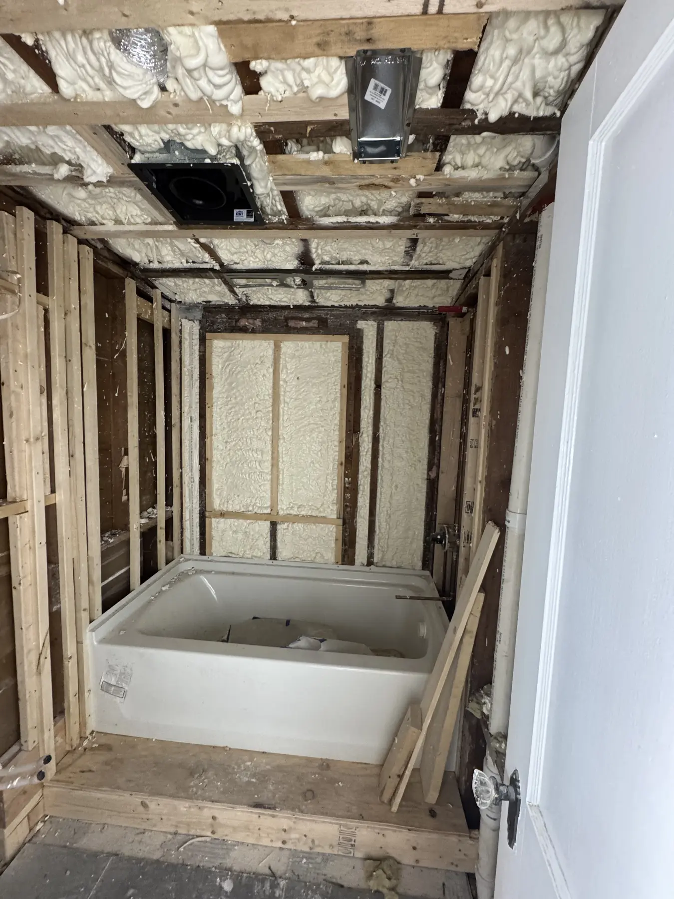
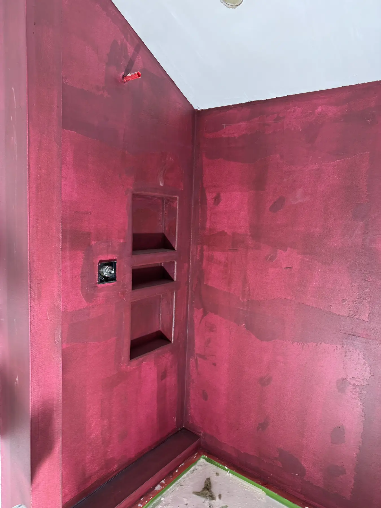
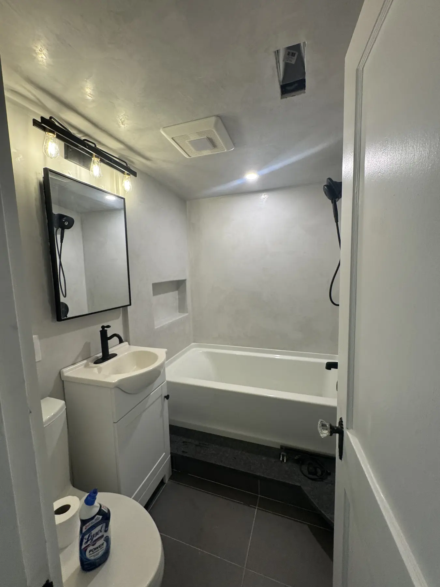
Marblehead, Massachusetts
Full bathroom rebuild
Stripped to the studs, waterproofed with built-in shower niches, then finished with seamless walls around the tub and shower.
See Microcement →Plastering projects from real homes in Boston, Greater Boston and the North Shore. Pick a finish and see what we have built.
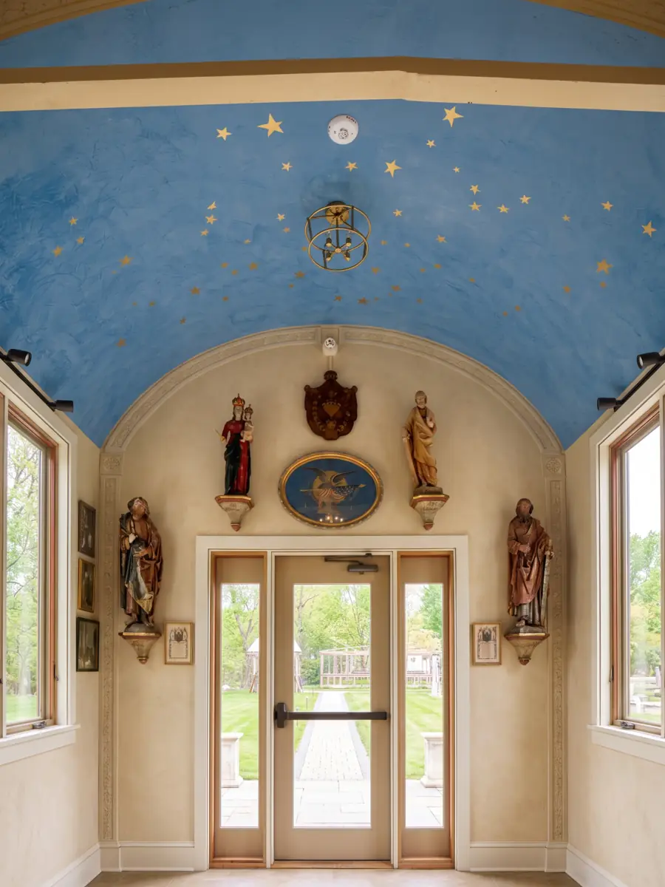
Venetian Plaster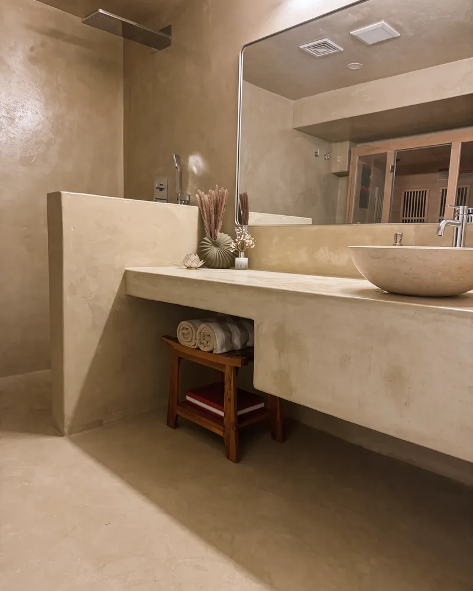
Microcement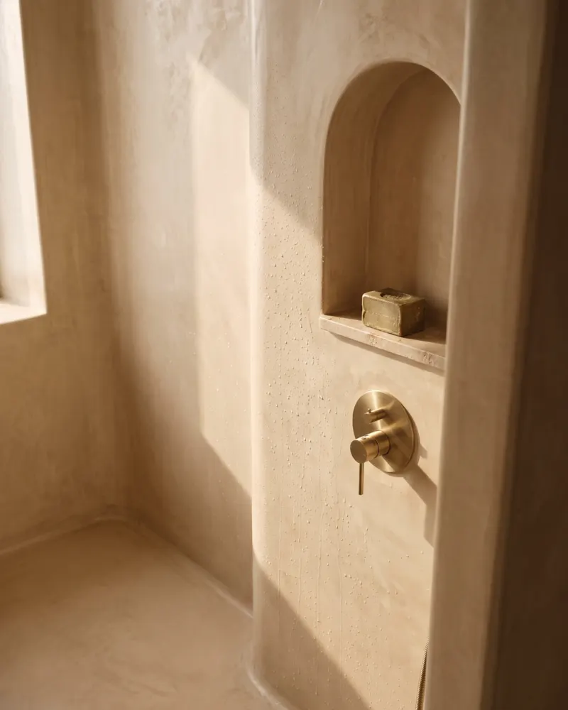
Tadelakt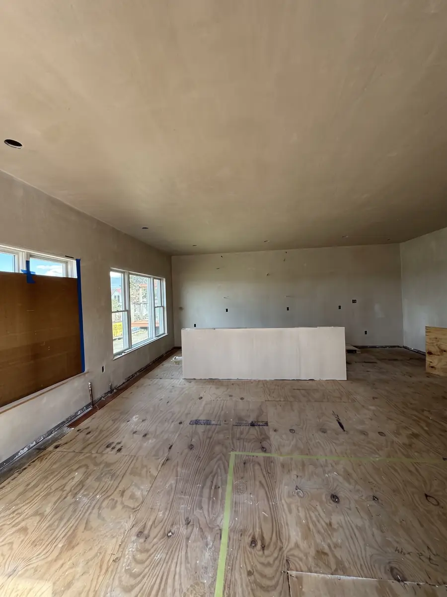
Blueboard & Veneer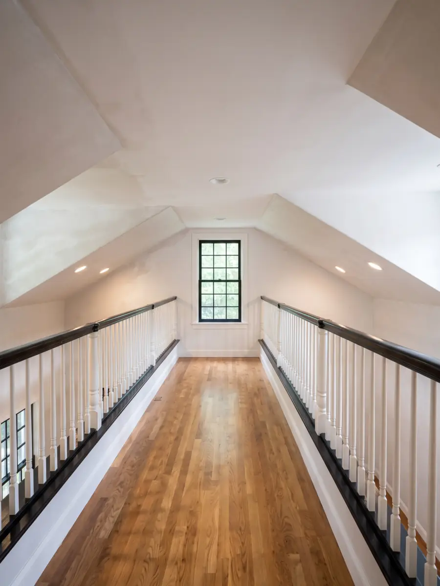
Plaster Repair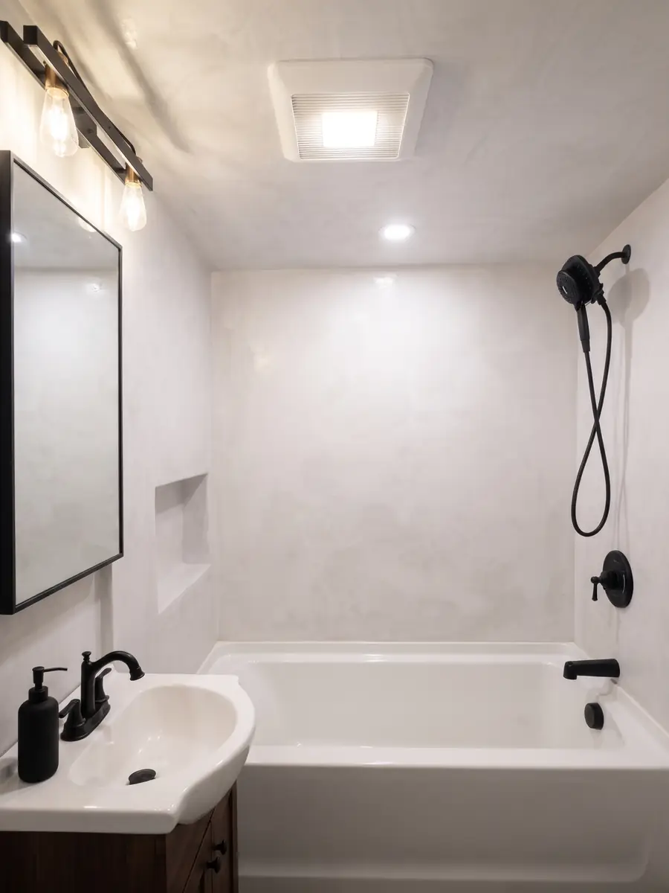
Microcement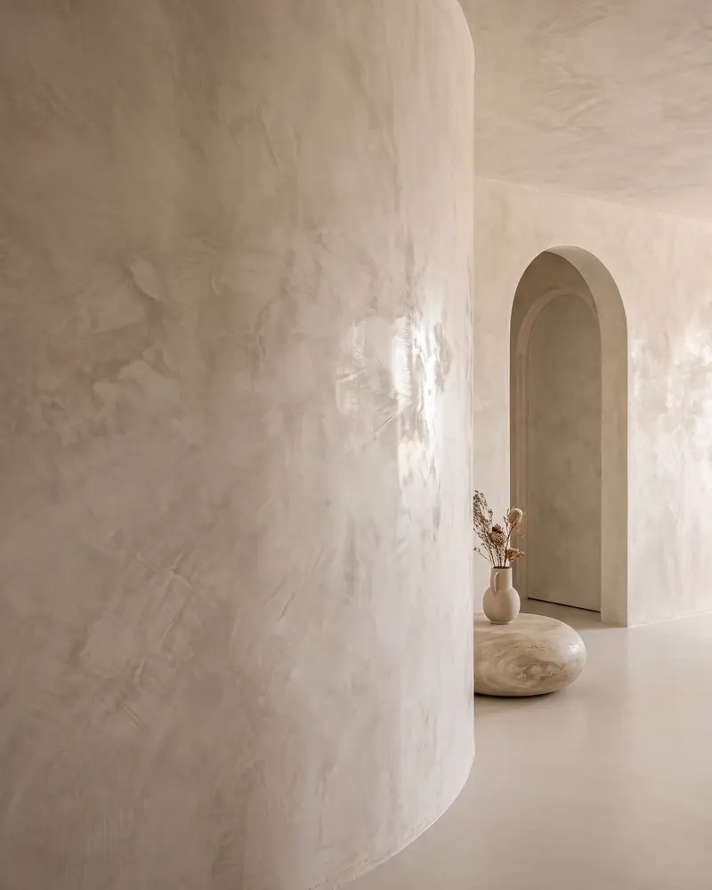
Venetian Plaster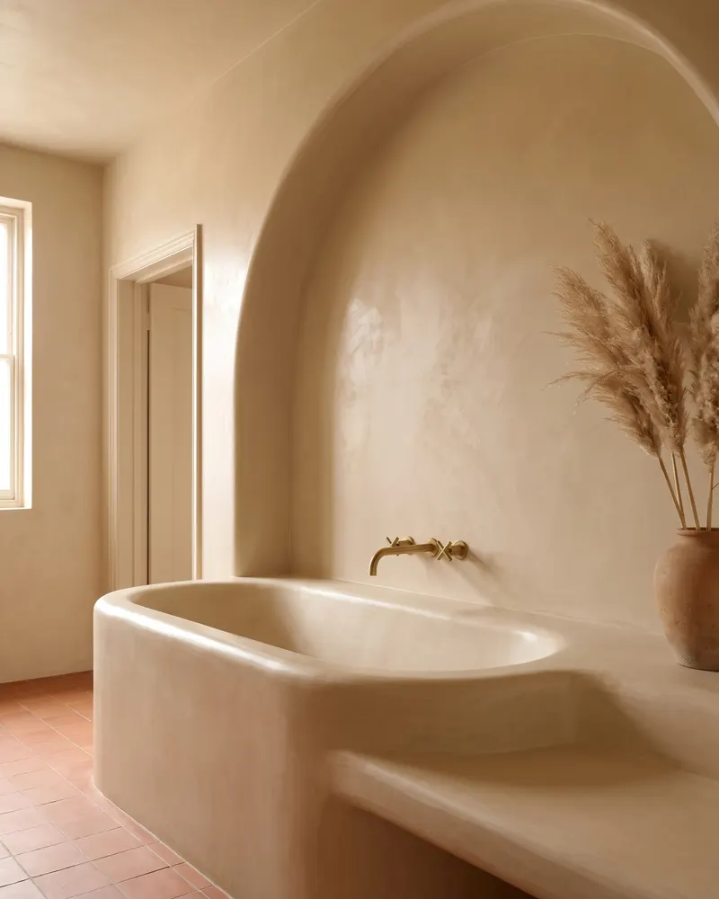
Tadelakt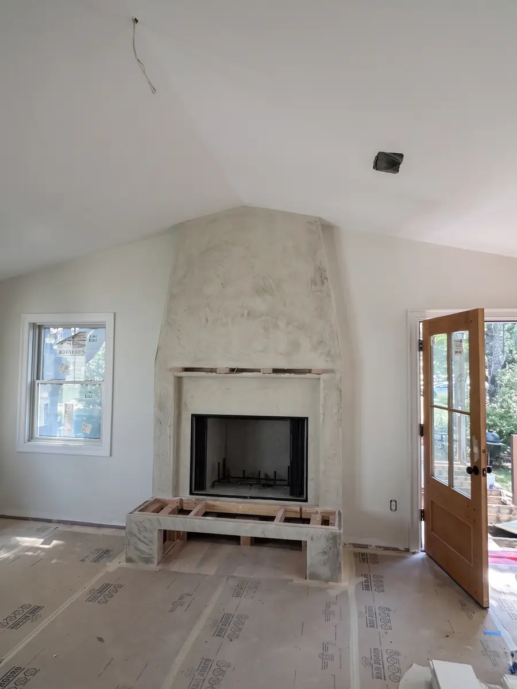
Tadelakt & Microcement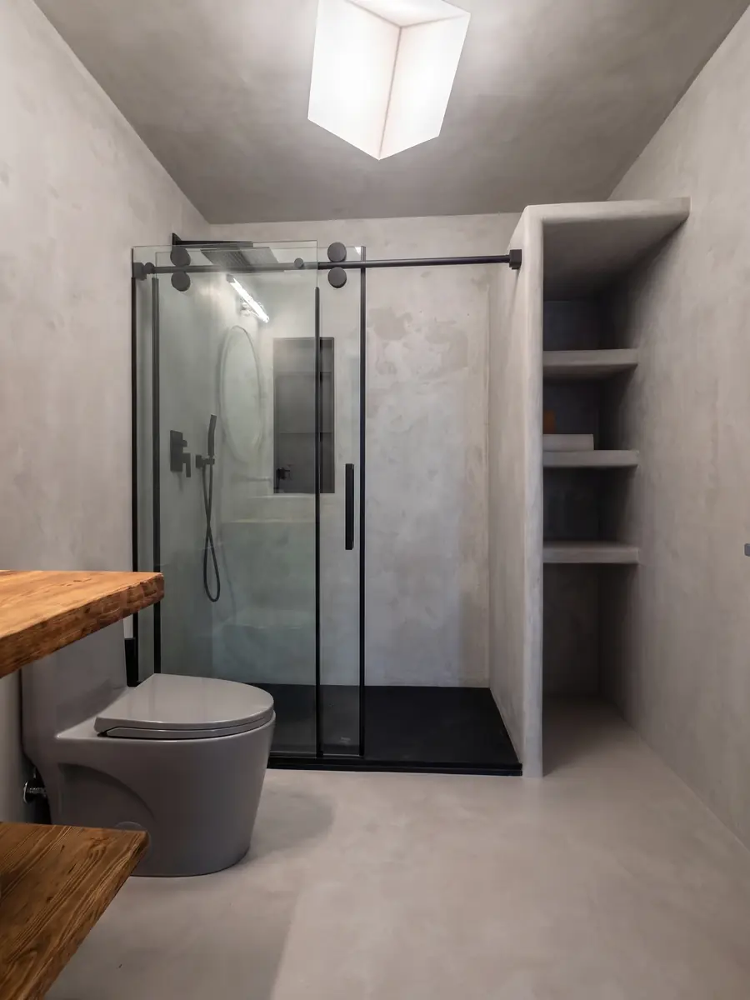
MicrocementPolished walls and ceilings with depth and movement, like the vaulted chapel ceiling in Peabody. Built up by hand in thin layers and burnished to a soft sheen. See Venetian plaster.
Seamless bathrooms, showers and vanities with no grout lines, like the projects in Newburyport and Marblehead. See microcement.
Waterproof lime plaster for showers, niches and wet rooms, applied and polished by hand with a stone. See tadelakt.
New walls and ceilings in kitchens, attics and additions, like the Nahant kitchen. See blueboard and veneer plaster.
Cracked, sagging and water damaged ceilings and walls brought back to a smooth surface, like the Concord stairwell. See plaster ceiling repair and water damaged ceiling repair.
Send a photo of your space and a few words about the look you want. The owner will tell you which finish fits the room, what the wall needs first, and send a detailed written estimate after the walkthrough. Call (781) 480-6850 or use the free estimate form.
Every project in this portfolio starts the same way: the owner walks the space, checks the surface and what is behind it, and explains the options before anything is written down. On repairs that usually means testing how well the old plaster is still holding to the lath; on decorative finishes it means checking that the wall or the shower is flat, dry and ready for the system we are going to apply.
During the work, floors, cabinets and furniture are covered and dust is contained. Each coat gets the time it needs to cure. Venetian plaster is built up in thin layers and burnished, microcement goes on in several coats over a mesh and is sealed, and tadelakt is polished with a stone and finished with olive soap so it sheds water. At the end we walk the room with you and leave it clean, ready for paint, fixtures or furniture.
The jobs on this page come from Peabody, Marblehead, Newburyport, Nahant, Concord and towns across Greater Boston. We serve Boston, Newton, Brookline, Chestnut Hill, North Reading and Melrose, and take projects in nearby towns. See all our plastering services.
Looking at photos is the easiest way to decide, but the room matters as much as the look. For a shower or a wet room, tadelakt and microcement are the two finishes made to handle daily water: tadelakt is softer and more organic, microcement is cleaner and more modern. For a living room, dining room or entry, Venetian plaster gives the most depth and is built to be touched and lived with. For a kitchen floor or a busy bathroom floor, microcement is the practical choice because it is seamless and easy to clean. For new walls and ceilings in an addition, blueboard and veneer plaster is the durable, smooth base that New England builders have used for decades. If your project is a repair, the goal is the opposite of a statement: a ceiling or wall that looks like nothing ever happened. Tell us how the room is used and the owner will recommend the finish that fits.
Yes. Every photo on this page is from a real job done by Ezra Plastering in Massachusetts. No stock images and no renders.
Yes. Each service page has more project photos, and during the walkthrough the owner can show you similar jobs to the one you are planning.
Most repairs take one to three days. Decorative finishes like Venetian plaster, microcement and tadelakt take longer because each coat needs time to cure; the timeline is in your written estimate.
Yes. Our projects are spread across Greater Boston and the North Shore, including Newton, Brookline, Chestnut Hill, North Reading, Melrose, Marblehead, Peabody and Newburyport.
Tell us what you are planning. We put the scope and value in writing before any price, and the owner is on every job.
Four quick steps. The owner replies within one business day.
Prefer to talk? Call (781) 480-6850
One tap. Your call goes straight to the owner.
Or call now: (781) 480-6850
These are plastering projects done by Ezra Plastering in Boston, Greater Boston and the North Shore: repairs in century-old homes, new veneer plaster walls in additions, and decorative finishes in bathrooms, kitchens and living rooms. Use the filter to see one finish at a time, and open any photo to read about that service.
Below the gallery, the project stories show the same jobs before, during and after, so you can see what the wall looked like when we arrived and how each finish was built, coat by coat.